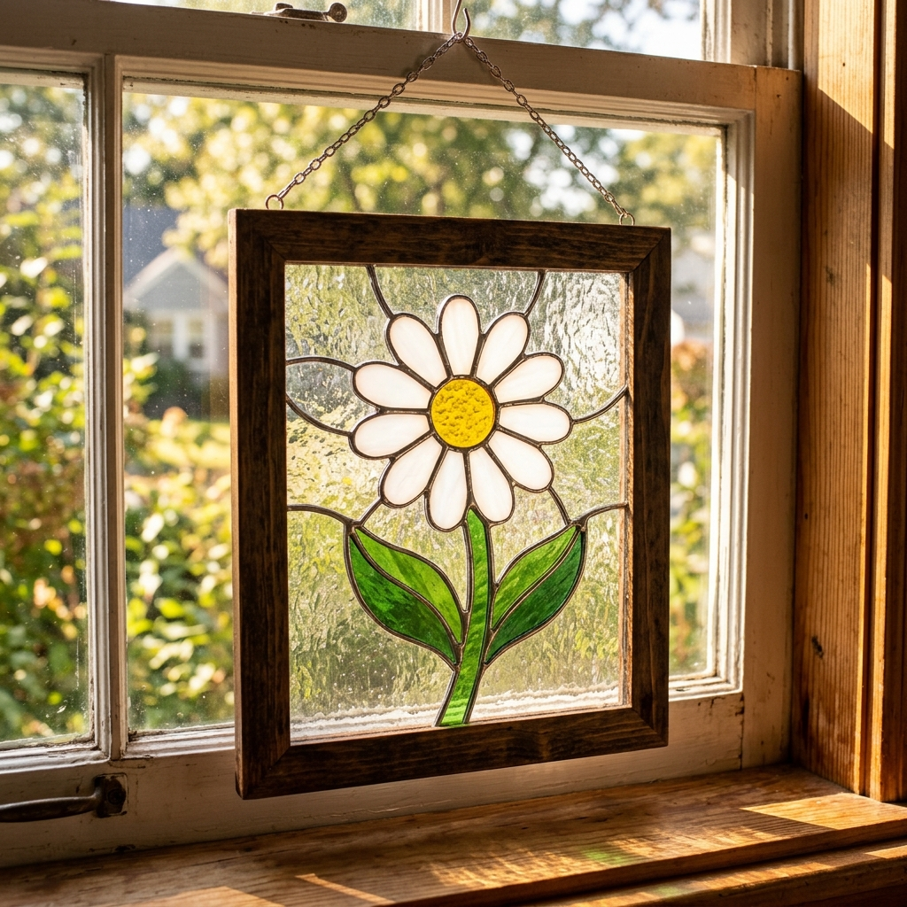

SHAPING
LIGHT &
COLOR.
Discover the timeless beauty of handcrafted stained glass. We restore history and design contemporary masterpieces for modern spaces.

25+ Years
Of Master Craftsmanship
Preserving The
Ancient Art Of Glass.
Every cut, every grind, and every solder joint is done by hand in our local studio. We believe in the meticulous nature of stained glass artistry, honoring techniques that have been used for centuries to manipulate light.
From restoring 100-year-old cathedral windows to teaching the next generation of glass artists through our interactive workshops, our mission is to keep this radiant craft alive.
Read Our StoryPortfolio Showcase
Recent Creations

Restoration
Victorian Era Window

Product
Geometric Suncatcher

Workshop
Beginner's Floral Panel

Design
Modern Cathedral Installation
Expert Restoration
Decades of weather, gravity, and accidental damage can bow and break historic windows. Our master restorers carefully dismantle, clean, and re-lead panels to ensure they last another century.
1. Assessment
We carefully create rubbings of the original design, photograph the damage, and identify the exact types and textures of replacement glass needed.
2. Dismantling
The old, failing lead is meticulously removed. Salvageable glass is chemically cleaned to remove decades of soot and grime, revealing the true colors.
3. Re-Leading
The panel is rebuilt using fresh, structurally sound lead came. The joints are soldered, and putty is applied to waterproof and solidify the entire piece.
Words From Our Clients
"Crystal Mosaic restored a transom window from our 1920s home. The match to the original glass is indistinguishable. It completely transformed our entryway."
Eleanor Rigby
Homeowner"I attended their 4-week beginner workshop. The instructors are incredibly patient and knowledgeable. I walked away with a beautiful panel and a new hobby!"
Marcus Thorne
Workshop Student"We bought several suncatchers as gifts. The vibrant colors and the quality of the soldering are exceptional. Highly recommend their online shop."
Sarah Jenkins
Verified BuyerJoin Our Waitlist
Our beginner stained glass workshops sell out fast. Enter your email to be the first to know when new dates are announced, and receive studio updates.